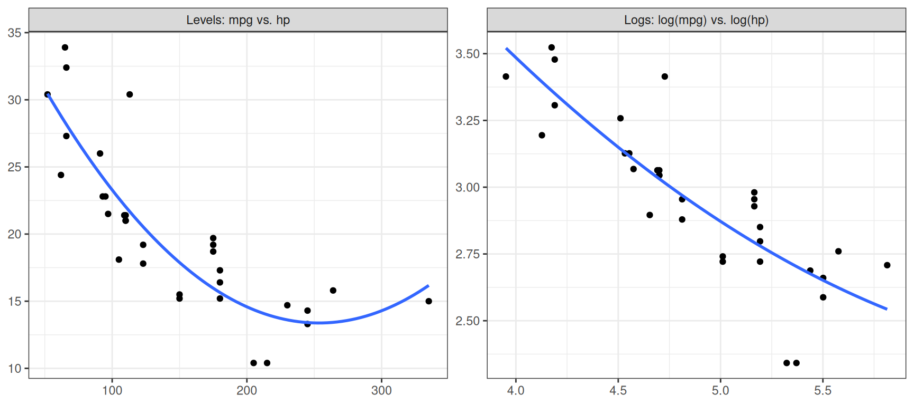

reg <- lm(mpg ~ hp + wt, data = mtcars)10 Interpreting Regressions
\[ \newcommand{\E}{\mathbb{E}} \renewcommand{\P}{\textrm{P}} \let\L\relax \newcommand{\L}{\textrm{L}} %doesn't work in .qmd, place this command at start of qmd file to use it \newcommand{\F}{\textrm{F}} \newcommand{\var}{\textrm{var}} \newcommand{\cov}{\textrm{cov}} \newcommand{\corr}{\textrm{corr}} \newcommand{\Var}{\mathrm{Var}} \newcommand{\Cov}{\mathrm{Cov}} \newcommand{\Corr}{\mathrm{Corr}} \newcommand{\sd}{\mathrm{sd}} \newcommand{\se}{\mathrm{s.e.}} \newcommand{\T}{T} \newcommand{\indicator}[1]{\mathbb{1}\{#1\}} \newcommand\independent{\perp \!\!\! \perp} \newcommand{\N}{\mathcal{N}} \]
In this chapter, our interest will shift to conditional expectations, such as \(\E[Y|X_1,X_2,X_3]\) (I’ll write \(X_1\), \(X_2\), and \(X_3\) in a lot of examples in this chapter, but you can think of there being an arbitrary number of \(X\)’s).
I’ll refer to \(Y\) as the outcome. You might also sometimes hear it called the dependent variable.
I’ll refer to the \(X\)’s as either covariates or regressors or characteristics. You might also hear them called independent variables sometimes.
Before we start to get into the details, let us first discuss why we’re interested in conditional expectations. First, if we are interested in making predictions, it will often be the case that the “best” prediction that one can make is the conditional expectation. This should make sense to you — if you want to make a reasonable prediction about what the outcome will be for a new observation that has characteristics \(x_1\), \(x_2\), and \(x_3\), a good way to do it would be to predict that their outcome would be the same as the mean outcome in the population among those that have the same characteristics; that is, \(\E[Y|X_1=x_1, X_2=x_2, X_3=x_3]\).
Next, in economics, we are often interested in comparing average outcomes across groups of observations that differ in one characteristic but are similar in others. To give some examples, we might be interested in comparing the average return of actively managed mutual funds to that of passively managed mutual funds among funds that invest in the same asset class (e.g., large cap stocks or international bonds). As another example, we might be interested in comparing average crop yields across farms that used different amounts of fertilizer but that experienced the same temperature and precipitation.
The difference in the average outcome, \(Y\), between observations whose value of one covariate, \(X_1\), differs by 1 unit but that have the same values of the other covariates is what we’ll call the marginal contrast for \(X_1\). Suppose \(X_1\) is binary, then it is given by
\[ MC(x_2,x_3) = \E[Y | X_1=1, X_2=x_2, X_3=x_3] - \E[Y | X_1=0,X_2=x_2,X_3=x_3] \] Notice that the marginal contrast can depend on \(x_2\) and \(x_3\). For example, the difference in average returns between actively and passively managed funds could be different across different asset classes.
Slightly more generally, if \(X_1\) is discrete, so that it can take on several different discrete values, then we define the marginal contrast as
\[ MC(x_1,x_2,x_3) = \E[Y | X_1=x_1+1, X_2=x_2, X_3=x_3] - \E[Y | X_1=x_1,X_2=x_2,X_3=x_3] \] which now can depend on \(x_1\), \(x_2\), and \(x_3\). This is the difference in the average outcome between observations with \(X_1=x_1+1\) and observations with \(X_1=x_1\), among those that have \(X_2=x_2\) and \(X_3=x_3\).
Finally, consider the case where \(X_1\) is continuous (for example, the amount of fertilizer used). In this case the marginal contrast is given by the partial derivative of \(\E[Y|X_1,X_2,X_3]\) with respect to \(X_1\).
\[ MC(x_1,x_2,x_3) = \frac{\partial \, \E[Y|X_1=x_1, X_2=x_2, X_3=x_3]}{\partial \, x_1} \] This partial derivative is analogous to what we have been doing before — we are comparing the average outcome for values of \(X_1\) that are very close to \(x_1\), among observations that have \(X_2=x_2\) and \(X_3=x_3\).
Side-Comment: This is probably the part of the class where we will jump around in the book the most this semester.
The pedagogical approach of the textbook is to introduce the notion of causality very early and to emphasize the requirements on linear regression models in order to deliver causality, while increasing the complexity of the models over several chapters.
This is totally reasonable, but I prefer to start by teaching the mechanics of regressions: how to compute them, how to interpret them (even if you are not able to meet the requirements of causality), and how to use them to make predictions. Then, we’ll have a serious discussion about causality over the last few weeks of the semester.
In practice, this means we’ll cover parts Chapters 4-8 in the textbook now, and then we’ll circle back to some of the issues covered in these chapters again towards the end of the semester.
10.1 Nonparametric Regression / Curse of Dimensionality
If you knew nothing about regressions, it would seem natural to try to estimate \(\E[Y|X_1=x_1,X_2=x_2,X_3=x_3]\) by just calculating the average of \(Y\) among observations that have values of the regressors equal to \(x_1\), \(x_2\), and \(x_3\) (if these are discrete) or that are, in some sense, close to \(x_1\), \(x_2\), and \(x_3\) (if these are continuous).
This is actually a pretty attractive idea.
However, you run into the issue that it is practically challenging to do this when the number of regressors starts to get large (i.e., if you have 10 regressors, generally, you would need tons of data to be able to find a suitable number of observations that are “close” to any particular value of the regressors).
Let me give a more concrete example. Suppose that you were trying to estimate mean house price as a function of a house’s characteristics. If the only characteristic of the house that you knew was the number of bedrooms, then it would be pretty easy to just calculate the average house price among houses with 2, 3, 4, etc. bedrooms. Now suppose that you knew both the number of bedrooms and the number of square feet. In this case, if we wanted to estimate mean house prices as a function of these characteristics, we would need to find houses that have the same number of bedrooms and (at least) a similar number of square feet. This starts to “slice” the data that you have more thinly. If you continue with this idea (suppose that you want to estimate mean house price as a function of number of bedrooms, number of bathrooms, number of square feet, what year the house was built in, whether or not it has a basement, what zip code it is located in, etc.) then you will start to stretch your data extremely thin to the point that you may have very few relevant observations (or perhaps no relevant observations) for particular values of the characteristics.
This issue is called the “curse of dimensionality”.
We will focus on linear models for \(\E[Y|X_1,X_2,X_3]\) largely to get around the curse of dimensionality.
This idea of using observations that are very close in terms of characteristics in order to estimate a conditional expectation is called nonparametric econometrics/statistics. You can take entire courses (typically graduate-level) on this topic if you were interested. The reason that it is is called nonparametric is that it doesn’t involve making any functional form assumptions (like linearity) but the cost is that it would typically require many more observations (due to the curse of dimensionality).
10.2 Linear Regression Models
SW 4.1
In order to get around the curse of dimensionality that we discussed in the previous section, we will often an impose a linear model for the conditional expectation. For example,
\[ \E[Y|X] = \beta_0 + \beta_1 X \] or
\[ \E[Y|X_1,X_2,X_3] = \beta_0 + \beta_1 X_1 + \beta_2 X_2 + \beta_3 X_3 \] If we know the values of \(\beta_0\), \(\beta_1\), \(\beta_2\), and \(\beta_3\), then it is straighforward for us to make predictions. In particular, suppose that we want to predict the outcome for a new observation with characteristics \(x_1\), \(x_2\), and \(x_3\). Our prediction would be
\[ \beta_0 + \beta_1 x_1 + \beta_2 x_2 + \beta_3 x_3 \]
Example: Suppose that you are studying intergenerational income mobility and that you are interested in predicting a child’s income whose parents’ income was $50,000 and whose mother had 12 years of education. Let \(Y\) denote child’s income, \(X_1\) denote parents’ income, and \(X_2\) denote mother’s education. Further, suppose that \(\E[Y|X_1,X_2] = 20,000 + 0.5 X_1 + 1000 X_2\).
In this case, you would predict child’s income to be
\[ 20,000 + 0.5 (50,000) + 1000(12) = 57,000 \]
Side-Comment:
The above model can be equivalently written as \[\begin{align*} Y = \beta_0 + \beta_1 X_1 + \beta_2 X_2 + \beta_3 X_3 + U \end{align*}\] where \(U\) is called the error term and satisfies \(\E[U|X_1,X_2,X_3] = 0\). There will be a few times where this formulation will be useful for us.
10.3 Computation
Even if we know that \(\E[Y|X_1,X_2,X_3] = \beta_0 + \beta_1 X_1 + \beta_2 X_2 + \beta_3 X_3\), in general, we do not know the values of the population parameters (the \(\beta\)’s). This is analogous to the framework in the previous chapter where we were interested in the population parameter \(\E[Y]\) and estimated it by \(\bar{Y}\).
In this section, we’ll discuss how to estimate \((\beta_0,\beta_1,\beta_2,\beta_3)\) using R. We’ll refer to the estimated values of the parameters as \((\hat{\beta}_0, \hat{\beta}_1, \hat{\beta}_2, \hat{\beta}_3)\). As in the previous section, it will not be the case that the estimated \(\hat{\beta}\)’s are exactly equal to the population \(\beta\)’s. In the chapter on properties of regression estimators, we will establish properties like consistency (so that, as long as we have a large sample, the estimated \(\hat{\beta}\)’s should be “close” to the population \(\beta\)’s) and asymptotic normality (so that we can conduct inference).
In the next chapter, we’ll talk about how R itself actually makes these computations.
The main function in R for estimating linear regressions is the lm function (lm stands for linear model). The key things to specify for running a regression in R are a formula argument which tells lm which variables are the outcome and which variables are the regressors and a data argument which tells the lm command what data we are using to estimate the regression. Let’s give an example using the mtcars data.
What this line of code does is to run a regression. The formula is mpg ~ hp + wt. In other words mpg (standing for miles per gallon) is the outcome, and we are running a regression on hp (horse power) and wt (weight). The ~ symbol is a “tilde”. In order to add regressors, we separate them with a +. The second argument data=mtcars says to use the mtcars data. All of the variables in the formula need to correspond to column names in the data. We saved the results of the regression in a variable called reg. It’s most common to report the results of the regression using the summary command.
summary(reg)
Call:
lm(formula = mpg ~ hp + wt, data = mtcars)
Residuals:
Min 1Q Median 3Q Max
-3.941 -1.600 -0.182 1.050 5.854
Coefficients:
Estimate Std. Error t value Pr(>|t|)
(Intercept) 37.22727 1.59879 23.285 < 2e-16 ***
hp -0.03177 0.00903 -3.519 0.00145 **
wt -3.87783 0.63273 -6.129 1.12e-06 ***
---
Signif. codes: 0 '***' 0.001 '**' 0.01 '*' 0.05 '.' 0.1 ' ' 1
Residual standard error: 2.593 on 29 degrees of freedom
Multiple R-squared: 0.8268, Adjusted R-squared: 0.8148
F-statistic: 69.21 on 2 and 29 DF, p-value: 9.109e-12The main thing that this reports is the estimated parameters. Our estimate of the “Intercept” (i.e., this is \(\hat{\beta}_0\)) is in the first row of the table; our estimate is 37.227. The estimated coefficient on hp is -0.0318, and the estimated coefficient on wt is -3.878.
You can also see standard errors for each estimated parameter, a t-statistic, and a p-value in the other columns. We will talk about these in more detail in the next section.
For now, we’ll also ignore the information provided at the bottom of the summary.
Now that we have estimated the parameters, we can use these to predict \(mpg\) given a value of \(hp\) and \(wt\). For example, suppose that you wanted to predict the \(mpg\) of a 2500 pound car (note: weight in \(mtcars\) is in 1000s of pounds) and 120 horsepower car, you could compute
\[
37.227 - 0.0318(120) - 3.878(2.5) = 23.716
\] Alternatively, there is a built-in function in R called predict that can be used to generate predicted values. We just need to specify the values that we would like to get predicted values for by passing in a data frame with the relevant columns though the newdata argument. For example,
pred <- predict(reg, newdata = data.frame(hp = 120, wt = 2.5))
round(pred, 3) 1
23.72 A popular alternative to R’s lm function is the lm_robust function from the estimatr package. This provides different standard errors from the default standard errors provided by lm that are, at least in most applications in economics, typically a better choice — we’ll have a further discussion on this topic when we talk about inference for regressions in a later chapter.
10.4 Marginal Contrasts
As we discussed in the beginning of this chapter, besides predicting outcomes, a second main goal for us is to think about marginal contrasts for a regressor. We’ll consider marginal contrasts over the next few sections.
In the model, \[\begin{align*} \E[Y | X_1, X_2, X_3] &= \beta_0 + \beta_1 X_1 + \beta_2 X_2 + \beta_3 X_3 \end{align*}\]
If \(X_1\) is continuous, then \[\begin{align*} \beta_1 = \frac{\partial \E[Y|X_1,X_2,X_3]}{\partial X_1} \end{align*}\]
Thus, \(\beta_1\) is the marginal contrast for \(X_1\). In other words, \(\beta_1\) should be interpreted as: comparing observations that have the same values of \(X_2\) and \(X_3\), those whose \(X_1\) is one unit higher have, on average, a \(Y\) that is \(\beta_1\) higher. Make sure to get this interpretation right! Notice that this interpretation compares different observations; it does not say that increasing \(X_1\) for a particular observation would increase its \(Y\) by \(\beta_1\).
Example: Continuing the same example as above about intergenerational income mobility and where \(Y\) denotes child’s income, \(X_1\) denotes parents’ income, \(X_2\) denotes mother’s education, and
\[ \E[Y|X_1,X_2] = 20,000 + 0.5 X_1 + 1000 X_2 \] The marginal contrast for parents’ income is 0.5. This means that, comparing children whose mothers have the same level of education, children whose parents’ income is one dollar higher have, on average, 0.5 dollars higher income.
10.4.1 Computation
Let’s run the same regression as in the previous section, but think about marginal contrasts in this case.
reg1 <- lm(mpg ~ hp + wt, data = mtcars)
summary(reg1)
Call:
lm(formula = mpg ~ hp + wt, data = mtcars)
Residuals:
Min 1Q Median 3Q Max
-3.941 -1.600 -0.182 1.050 5.854
Coefficients:
Estimate Std. Error t value Pr(>|t|)
(Intercept) 37.22727 1.59879 23.285 < 2e-16 ***
hp -0.03177 0.00903 -3.519 0.00145 **
wt -3.87783 0.63273 -6.129 1.12e-06 ***
---
Signif. codes: 0 '***' 0.001 '**' 0.01 '*' 0.05 '.' 0.1 ' ' 1
Residual standard error: 2.593 on 29 degrees of freedom
Multiple R-squared: 0.8268, Adjusted R-squared: 0.8148
F-statistic: 69.21 on 2 and 29 DF, p-value: 9.109e-12The estimated marginal contrast for horsepower is -0.032. In other words, we estimate that, comparing cars with the same weight, cars with one more horsepower get, on average, 0.032 fewer miles per gallon.
The t-statistic and p-value are computed for the null hypothesis that the corresponding coefficient is equal to 0. For example, for hp the t-statistic is equal to -3.519, which is greater than 1.96 in absolute value and indicates that the marginal contrast for hp is statistically significant at a 5% significance level. The corresponding p-value for hp is 0.00145 indicating that there is only about a 0.15% chance of getting a t-statistic this extreme if the marginal contrast for hp were actually 0 (i.e., under \(H_0 : \beta_1=0\)).
Practice: What is the marginal contrast for wt in the previous example? Provide a careful interpretation. Is the marginal contrast for wt statistically significant? Explain. What is the p-value for wt? How do you interpret the p-value?
Side-Comment: One horsepower is a very small difference in horsepower, so it might be a good idea to multiply the coefficient by some larger number, say 50. In this case, we could say that we estimate that, comparing cars with the same weight, cars with 50 more horsepower get, on average, 1.59 (\(=50 \times 0.03177\)) fewer miles per gallon. From the above discussion, we know that this difference is statistically different from 0. That said, it is not clear to me if we should interpret this as a large marginal contrast; I do not know too much about cars, but a 50 horsepower difference seems rather large while a 1.59 miles per gallon difference seems relatively small (at least to me).
10.5 Binary Regressors
SW 5.3
Let’s continue with the same model as above
\[ \E[Y|X_1,X_2,X_3] = \beta_0 + \beta_1 X_1 + \beta_2 X_2 + \beta_3 X_3 \]
If \(X_1\) is discrete (let’s say binary): \[\begin{align*} \beta_1 = \E[Y|X_1=1,X_2,X_3] - \E[Y|X_1=0,X_2,X_3] \end{align*}\] \(\beta_1\) is still the marginal contrast for \(X_1\) and should be interpreted as the difference in the average \(Y\) between observations with \(X_1=1\) and observations with \(X_1=0\) that have the same values of \(X_2\) and \(X_3\).
If \(X_1\) can take more than just the values 0 and 1, but is still discrete (an example is a person’s years of education), then
\[ \beta_1 = \E[Y | X_1=x_1+1, X_2, X_3] - \E[Y|X_1=x_1, X_2, X_3] \] which holds for any possible value that \(X_1\) could take, so that \(\beta_1\) is the difference in the average \(Y\) between observations whose \(X_1\) differs by 1 unit but that have the same values of \(X_2\) and \(X_3\).
Example: Suppose that you work for an airline and you are interested in predicting the number of passengers for a Saturday morning flight from Atlanta to Memphis. Let \(Y\) denote the number of passengers, \(X_1\) be equal to 1 for a morning flight and 0 otherwise, and let \(X_2\) be equal to 1 for a weekday flight and 0 otherwise. Further suppose that \(\E[Y|X_1,X_2] = 80 + 20 X_1 - 15 X_2\).
In this case, you would predict,
\[ 80 + 20 (1) - 15 (0) = 100 \] passengers on the flight.
In addition, the marginal contrast for being a morning flight is equal to 20. This indicates that, on average, morning flights have 20 more passengers than non-morning flights among flights that are on the same type of day (weekday or weekend).
10.5.1 Computation
In order to include a binary or discrete covariate in a regression in R is straightforward. The following regression uses the mtcars data and adds a binary regressor, am, indicating whether or not a car has a manual transmission (am = 1 for manual, 0 for automatic).
reg2 <- lm(mpg ~ hp + wt + am, data = mtcars)
summary(reg2)
Call:
lm(formula = mpg ~ hp + wt + am, data = mtcars)
Residuals:
Min 1Q Median 3Q Max
-3.4221 -1.7924 -0.3788 1.2249 5.5317
Coefficients:
Estimate Std. Error t value Pr(>|t|)
(Intercept) 34.002875 2.642659 12.867 2.82e-13 ***
hp -0.037479 0.009605 -3.902 0.000546 ***
wt -2.878575 0.904971 -3.181 0.003574 **
am 2.083710 1.376420 1.514 0.141268
---
Signif. codes: 0 '***' 0.001 '**' 0.01 '*' 0.05 '.' 0.1 ' ' 1
Residual standard error: 2.538 on 28 degrees of freedom
Multiple R-squared: 0.8399, Adjusted R-squared: 0.8227
F-statistic: 48.96 on 3 and 28 DF, p-value: 2.908e-11In this example, among cars with the same horsepower and weight, cars that had a manual transmission got about 2 more miles per gallon on average than cars that had an automatic transmission (though the p-value is 0.14, so this difference is not statistically significant at conventional significance levels).
10.6 Nonlinear Regression Functions
SW 8.1, 8.2
Also, please read all of SW Ch. 8
So far, the marginal contrasts that we have been interested in have corresponded to a particular parameter in the regression, usually \(\beta_1\). I think this can sometimes be a source of confusion as, at least in my view, we are not typically interested in the parameters for their own sake, but rather are interested in marginal contrasts. It just so happens that in some leading cases, they coincide.
In addition, while the \(\beta\)’s in the sort of models we have considered so far are easy to interpret, in some cases, it might be restrictive to think that the marginal contrasts are the same across different values of the covariates.
In this section, we’ll see the first of several cases where marginal contrasts do not coincide with a particular parameter.
Suppose that
\[ \E[Y|X_1,X_2,X_3] = \beta_0 + \beta_1 X_1 + \beta_2 X_1^2 + \beta_3 X_2 + \beta_4 X_3 \]
Let’s start with making predictions using this model. If you know the values of \(\beta_0,\beta_1,\beta_2,\beta_3,\) and \(\beta_4\), then to get a prediction, you would still just plug in the values of the regressors that you’d like to get a prediction for (including \(x_1^2\)).
Next, in this model, the marginal contrast for \(X_1\) is given by
\[ \frac{\partial \, \E[Y|X_1,X_2,X_3]}{\partial \, X_1} = \beta_1 + 2\beta_2 X_1 \] In other words, the marginal contrast for \(X_1\) depends on the value that \(X_1\) takes.
In this case, it is sometimes useful to report the marginal contrast at some different values of \(X_1\). In other cases, it is useful to report the average marginal contrast (AMC), which is the mean of the marginal contrasts across the distribution of the covariates. In this case, the AMC is given by
\[ AMC = \beta_1 + 2 \beta_2 \E[X_1] \] and, once you have estimated the regression, you can compute an estimate of \(AMC\) by
\[ \widehat{AMC} = \hat{\beta}_1 + 2 \hat{\beta}_2 \bar{X}_1 \]
Example: Let’s continue our example on intergenerational income mobility where \(Y\) denotes child’s income, \(X_1\) denotes parents’ income, and \(X_2\) denotes mother’s education. Now, suppose that
\[ \E[Y|X_1,X_2] = 15,000 + 0.7 X_1 - 0.000002 X_1^2 + 800 X_2 \] Then, predicted child’s income when parents’ income is equal to $50,000 and mother’s education is 12 years is given by
\[ 15,000 + 0.7 (50,000) - 0.000002 (50,000)^2 + 800 (12) = 54,600 \] In addition, the marginal contrast for parents’ income is given by
\[ 0.7 - 0.000004 X_1 \] Let’s compute a few different marginal contrasts at different values of parents’ income
| \(X_1\) | MC |
|---|---|
| 20,000 | 0.62 |
| 50,000 | 0.50 |
| 100,000 | 0.30 |
which indicates that the marginal contrast for parents’ income is decreasing — i.e., among families with low parents’ income, a given difference in parents’ income goes along with a larger difference in average child’s income than it does among families with high parents’ income.
Finally, if you wanted to compute the \(AMC\), you would just plug in \(\E[X_1]\) (or \(\bar{X}_1\)) into the expression for the marginal contrast.
10.6.1 Computation
Including a quadratic (or other higher order term) in R is relatively straightforward. Let’s just do an example.
reg3 <- lm(mpg ~ hp + I(hp^2), data = mtcars)
summary(reg3)
Call:
lm(formula = mpg ~ hp + I(hp^2), data = mtcars)
Residuals:
Min 1Q Median 3Q Max
-4.5512 -1.6027 -0.6977 1.5509 8.7213
Coefficients:
Estimate Std. Error t value Pr(>|t|)
(Intercept) 4.041e+01 2.741e+00 14.744 5.23e-15 ***
hp -2.133e-01 3.488e-02 -6.115 1.16e-06 ***
I(hp^2) 4.208e-04 9.844e-05 4.275 0.000189 ***
---
Signif. codes: 0 '***' 0.001 '**' 0.01 '*' 0.05 '.' 0.1 ' ' 1
Residual standard error: 3.077 on 29 degrees of freedom
Multiple R-squared: 0.7561, Adjusted R-squared: 0.7393
F-statistic: 44.95 on 2 and 29 DF, p-value: 1.301e-09The only thing that is new here is I(hp^2). The I function stands for inhibit (you can read the documentation using ?I). For us, this is not too important. You can understand it like this: there is no variable names hp^2 in the data, but if we put the name of a variable that is in the data (here: hp) then we can apply a function to it (here: squaring it) before including it as a regressor.
Interestingly, here it seems that the relationship between horsepower and miles per gallon is nonlinear. Let’s just quickly report the estimated marginal contrasts at a few different values of horsepower.
hp_vec <- c(100, 200, 300)
# there might be a native function in r
# to compute these marginal contrasts; I just
# don't know it.
mc <- function(hp) {
# marginal contrast is b1 + 2b2*hp
mcs <- coef(reg3)[2] + 2 * coef(reg3)[3] * hp
# print using a data frame
data.frame(hp = hp, mc = round(mcs, 3))
}
mc(hp_vec) hp mc
1 100 -0.129
2 200 -0.045
3 300 0.039which suggests that the marginal contrast for horsepower is large in magnitude (and negative) at small values of horsepower and shrinks toward zero (becoming slightly positive) at larger values of horsepower. In other words, among low-horsepower cars, differences in horsepower go along with fairly large differences in average miles per gallon, while among high-horsepower cars, they go along with very small differences.
10.7 Interpreting Interaction Terms
SW 8.3
Another way to allow for marginal contrasts that vary across different values of the regressors is to include interaction terms.
Consider the following regression model
\[ \E[Y|X_1,X_2,X_3] = \beta_0 + \beta_1 X_1 + \beta_2 X_2 + \beta_3 X_1 X_2 + \beta_4 X_3 \]
The term \(X_1 X_2\) is called the interaction term. In this model, the marginal contrast for \(X_1\) is given by
\[ \frac{\partial \, \E[Y|X_1,X_2,X_3]}{\partial \, X_1} = \beta_1 + \beta_3 X_2 \]
In this model, the marginal contrast for \(X_1\) varies with \(X_2\). As in the previous section, you could report the marginal contrast at different values of \(X_2\) or consider \(AMC = \beta_1 + \beta_3 \E[X_2]\).
There are a couple of other things worth pointing out for interaction terms
It is very common for one of the interaction terms, say, \(X_2\) to be a binary variable. This gives a way to easily test if the marginal contrast for \(X_1\) is the same across the two “groups” defined by \(X_2\). For example, suppose you wanted to check if the marginal contrast for education was the same for men and women. You could run a regression like
\[ Wage = \beta_0 + \beta_1 Education + \beta_2 Female + \beta_3 Education \cdot Female + U \]
From the previous discussion, the marginal contrast for education is given by
\[ \beta_1 + \beta_3 Female \]
Thus, the marginal contrast for education for men is given by \(\beta_1\), and the marginal contrast for education for women is given by \(\beta_1 + \beta_3\). Thus, if you want to test if the marginal contrast for education differs for men and women, you can just test if \(\beta_3=0\). If \(\beta_3>0\), it suggests a higher marginal contrast for education for women, and if \(\beta_3 < 0\), it suggests a lower marginal contrast for education for women.
Another interesting case is when \(X_1\) and \(X_2\) are both binary. In this case, a model that includes an interaction term is called a saturated model. It is called this because it is actually nonparametric. In particular, notice that in the model \(\E[Y|X_1,X_2] = \beta_0 + \beta_1 X_1 + \beta_2 X_2 + \beta_3 X_1 X_2\),
\[ \begin{aligned} \E[Y|X_1=0,X_2=0] &= \beta_0 \\ \E[Y|X_1=1,X_2=0] &= \beta_0 + \beta_1 \\ \E[Y|X_1=0,X_2=1] &= \beta_0 + \beta_2 \\ \E[Y|X_1=1,X_2=1] &= \beta_0 + \beta_1 + \beta_2 + \beta_3 \end{aligned} \]
This exhausts all possible combinations of the regressors and means that you can recover each possible value of the conditional expectation from the parameters of the model.
It would be possible to write down a saturated model in cases with more than two binary regressors (or even discrete regressors) — you would just need to include more interaction terms. The key thing is that there be no continuous regressors. That said, as you start to add more and more discrete regressors and their interactions, you will effectively start to run into the curse of dimensionality issues that we discussed earlier.
As an example, consider our earlier example of flights from Atlanta to Memphis where \(Y\) denoted the number of passengers, \(X_1\) was equal to 1 for a a morning flight and 0 otherwise, and \(X_2\) was equal to one for a weekday flight and 0 otherwise. Suppose that \(\E[Y|X_1,X_2] = 90 - 15 X_1 - 5 X_2 + 25 X_1 X_2\). Then,
\[ \begin{aligned} \E[Y|X_1=0,X_2=0] &= 90 \quad & \textrm{non-morning, weekend} \\ \E[Y|X_1=1,X_2=0] &= 90 - 15 = 75 \quad & \textrm{morning, weekend} \\ \E[Y|X_1=0,X_2=1] &= 90 - 5 = 85 \quad & \textrm{non-morning, weekday} \\ \E[Y|X_1=1,X_2=1] &= 90 - 15 - 5 + 25 = 100 \quad & \textrm{morning, weekday} \end{aligned} \]
10.7.1 Computation
Including interaction terms in regressions in R is straightforward. Using the mtcars data, we can do it as follows
reg4 <- lm(mpg ~ hp + wt + am + hp * am, data = mtcars)
summary(reg4)
Call:
lm(formula = mpg ~ hp + wt + am + hp * am, data = mtcars)
Residuals:
Min 1Q Median 3Q Max
-3.435 -1.510 -0.697 1.284 5.245
Coefficients:
Estimate Std. Error t value Pr(>|t|)
(Intercept) 33.34196 2.79711 11.920 2.89e-12 ***
hp -0.02918 0.01449 -2.014 0.05407 .
wt -3.05617 0.94036 -3.250 0.00309 **
am 3.55141 2.35742 1.506 0.14355
hp:am -0.01129 0.01466 -0.770 0.44809
---
Signif. codes: 0 '***' 0.001 '**' 0.01 '*' 0.05 '.' 0.1 ' ' 1
Residual standard error: 2.556 on 27 degrees of freedom
Multiple R-squared: 0.8433, Adjusted R-squared: 0.8201
F-statistic: 36.33 on 4 and 27 DF, p-value: 1.68e-10The interaction term in the results is in the row that starts with hp:am. These estimates suggest that, while cars with more horsepower tend to get fewer miles per gallon on average among cars with the same weight and transmission type, the marginal contrast for horsepower does not seem to vary much between cars with manual and automatic transmissions (at least not in a big enough way that we can detect it with the data that we have).
10.8 Logarithms, Percentage Differences, and Elasticities
SW 8.2
Economists are often interested in percentage differences rather than differences in levels, and in elasticities, which relate a percentage difference in one variable to a percentage difference in another (e.g., the percentage difference in \(Y\) associated with a 1% difference in \(X\)).
Recall that the definition of percentage change of moving from, say, \(x_{old}\) to \(x_{new}\) is given by
\[ \textrm{\% change} = \frac{x_{new} - x_{old}}{x_{old}} \times 100 \]
Percentage differences are closely connected to natural logarithms. Following the most common notation in economics, we’ll refer to the natural logarithm as \(\log\), rather than \(\ln\). First, let’s define
\[ \Delta \log(x) := \log(x_{new}) - \log(x_{old}) \] That is, \(\Delta \log(x)\) is computed by taking the log of each of the two values and then subtracting. For example, if \(x_{old}=100\) and \(x_{new}=110\), then \(\Delta \log(x) = \log(110) - \log(100) = 4.7005 - 4.6052 = 0.0953\). Notice that, by properties of logarithms, \(\Delta \log(x) = \log(x_{new}/x_{old})\), so it only depends on the ratio of the two values — for example, going from 20,000 to 22,000 gives exactly the same \(\Delta \log(x)\) as going from 100 to 110.
Next, recall that the derivative of the \(\log\) function is
\[ \frac{d \, \log(x)}{d \, x} = \frac{1}{x} \] The derivative tells us the slope of \(\log(x)\), so, for \(x_{new}\) close to \(x_{old}\), we can approximate the change in \(\log(x)\) by the slope at \(x_{old}\) times the change in \(x\):
\[ \Delta \log(x) \approx \frac{1}{x_{old}} (x_{new} - x_{old}) = \frac{x_{new} - x_{old}}{x_{old}} \] and, thus,
\[ 100 \cdot \Delta \log(x) \approx \textrm{\% change} \]
How good is this approximation? The table below compares the actual percentage change to \(100 \cdot \Delta \log(x)\) when \(x_{old}=100\).
| \(x_{new}\) | % change | \(100 \cdot \Delta \log(x)\) |
|---|---|---|
| 101 | 1 | 0.995 |
| 105 | 5 | 4.88 |
| 110 | 10 | 9.53 |
| 125 | 25 | 22.31 |
| 150 | 50 | 40.55 |
The approximation is very good for small percentage changes and gets worse as the change gets larger. For interpreting the regressions below, we will mostly be thinking about small differences (like 1%), where the approximation is very accurate.
Earlier in the chapter, we interpreted \(\beta_1\) by evaluating the regression at two different values of the regressor (e.g., \(x\) and \(x+1\)) and taking the difference, which gave us the difference in the average outcome between those two groups. We’ll do the same thing here. For simplicity, I am going to not include an error term or extra covariates, and I’ll write \(y\) and \(y'\) for the values of the outcome that the model gives at two values of the regressor, \(x\) and \(x'\) (as before, you should continue to interpret the results as comparisons “on average” and “among observations with the same values of the other regressors”). The only new issue is that, when a variable is in logs, the difference that we compute is a difference in logs, so we’ll use the approximation above to translate it into a percentage difference.
Level-Level Model (warm-up)
\[ Y = \beta_0 + \beta_1 X \]
In this case,
\[ y' - y = (\beta_0 + \beta_1 x') - (\beta_0 + \beta_1 x) = \beta_1 (x' - x) \]
So, if \(x'\) is one unit larger than \(x\), then \(y' - y = \beta_1\) — this is exactly the interpretation from earlier in the chapter.
Log-Log Model
\[ \log(Y) = \beta_0 + \beta_1 \log(X) \]
In this case,
\[ \begin{aligned} \log(y') - \log(y) &= \beta_1 \big( \log(x') - \log(x) \big) \\ \implies 100 \cdot \Delta \log(y) &= \beta_1 \cdot 100 \cdot \Delta \log(x) \\ \implies \% \Delta y &\approx \beta_1 \cdot \% \Delta x \end{aligned} \]
All that to say, in a regression of the log of an outcome on the log of a regressor, you should interpret the corresponding coefficient as the approximate percentage difference in the outcome, on average, between observations whose values of the regressor differ by 1%. In other words, \(\beta_1\) is an elasticity. The log-log model is sometimes called a constant elasticity model.
Log-Level Model
\[ \log(Y) = \beta_0 + \beta_1 X \]
In this case,
\[ \begin{aligned} \log(y') - \log(y) &= \beta_1 (x' - x) \\ \implies 100 \cdot \Delta \log(y) &= 100 \beta_1 (x' - x) \\ \implies \% \Delta y &\approx 100 \beta_1 (x' - x) \end{aligned} \]
Thus, in a regression of the log of an outcome on the level of a regressor, you should multiply the corresponding coefficient by 100 and interpret it as the approximate percentage difference in the outcome, on average, between observations whose values of the regressor differ by 1 unit. This includes the common case where \(X\) is binary (e.g., \(X=1\) for smokers and \(X=0\) for non-smokers): then \(100\beta_1\) is the approximate percentage difference in the outcome between the \(X=1\) group and the \(X=0\) group.
Level-Log Model
\[ Y = \beta_0 + \beta_1 \log(X) \]
In this case,
\[ \begin{aligned} y' - y &= \beta_1 \big( \log(x') - \log(x) \big) \\ &= \frac{\beta_1}{100} \cdot 100 \cdot \Delta \log(x) \\ &\approx \frac{\beta_1}{100} \cdot \% \Delta x \end{aligned} \]
Thus, in a regression of the level of an outcome on the log of a regressor, you should divide the corresponding coefficient by 100 and interpret it as the difference in the average outcome between observations whose values of the regressor differ by 1%.
The table below summarizes these interpretations.
| Model | Comparing observations whose \(X\) differs by… | …their average \(Y\) differs by about |
|---|---|---|
| \(Y = \beta_0 + \beta_1 X\) | 1 unit | \(\beta_1\) units |
| \(\log(Y) = \beta_0 + \beta_1 X\) | 1 unit | \(100\beta_1\)% |
| \(Y = \beta_0 + \beta_1 \log(X)\) | 1% | \(\beta_1/100\) units |
| \(\log(Y) = \beta_0 + \beta_1 \log(X)\) | 1% | \(\beta_1\)% |
Example: Let’s continue the same example on intergenerational income mobility where \(Y\) denotes child’s income, \(X_1\) denotes parents’ income and \(X_2\) denotes mother’s education. We’ll consider how to interpret several different models.
\[ \log(Y) = 8.8 + 0.4 \log(X_1) + 0.008 X_2 + U \] In this model, we estimate that, comparing children whose mothers have the same level of education, children whose parents’ income is 1% higher have, on average, about 0.4% higher income. In the literature on intergenerational mobility, this coefficient is called the intergenerational income elasticity, and larger values indicate that children’s incomes are more closely tied to their parents’ incomes.
Next, consider, \[ \log(Y) = 8.9 + 0.00004 X_1 + 0.007 X_2 + U \] In this model, we estimate that, comparing children whose mothers have the same level of education, children whose parents’ income is $1 higher have, on average, about 0.004% higher income (alternatively, children whose parents’ income is $1000 higher have about 4% higher income).
Finally, consider
\[ Y = -1,680,000 + 160,000 \log(X_1) + 900 X_2 + U \] In this case, we estimate that, comparing children whose mothers have the same level of education, children whose parents’ income is 1% higher have, on average, about $1,600 higher income.
In practice, economists most often take the logarithm of variables that are strictly positive (the log of zero or of a negative number is not defined) and that vary a lot in scale — things like income, wages, prices, sales, or GDP. The main motivation is that, for these sorts of variables, it is often more plausible that relationships with other variables are linear in terms of percentage differences than in terms of levels.
For example, in the intergenerational income mobility example above, a $1,000 difference in parents’ income is a big difference when comparing families with incomes of $20,000 and $21,000, but a fairly small difference when comparing families with incomes of $100,000 and $101,000. It seems unlikely that these two $1,000 differences go along with the same difference in child’s income. It seems more plausible that, say, a 1% difference in parents’ income goes along with a similar percentage difference in child’s income regardless of the level of parents’ income — which is exactly what the log-log model imposes.
10.8.1 Computation
Estimating models that include logarithms in R is straightforward. In the mtcars data, a log-log specification is natural: horsepower ranges from 52 to 335, and a 10 horsepower difference is a large difference for cars with around 50 horsepower, but a relatively small difference for cars with around 300 horsepower, which suggests thinking about differences in horsepower in percentage terms.
reg5 <- lm(log(mpg) ~ log(hp) + wt, data = mtcars)
reg6 <- lm(log(mpg) ~ hp + wt, data = mtcars)
reg7 <- lm(mpg ~ log(hp) + wt, data = mtcars)Let’s show the results all at once using the modelsummary function from the modelsummary package.
library(modelsummary)
model_list <- list(reg5, reg6, reg7)
modelsummary(model_list, fmt = 4)| (1) | (2) | (3) | |
|---|---|---|---|
| (Intercept) | 4.8317 | 3.8291 | 59.5709 |
| (0.2220) | (0.0687) | (4.9769) | |
| log(hp) | -0.2657 | -5.9218 | |
| (0.0565) | (1.2658) | ||
| wt | -0.1794 | -0.2005 | -3.2856 |
| (0.0274) | (0.0272) | (0.6148) | |
| hp | -0.0015 | ||
| (0.0004) | |||
| Num.Obs. | 32 | 32 | 32 |
| R2 | 0.885 | 0.869 | 0.859 |
| R2 Adj. | 0.877 | 0.860 | 0.849 |
| AIC | 140.3 | 144.5 | 150.0 |
| BIC | 146.1 | 150.4 | 155.9 |
| Log.Lik. | 28.501 | 26.395 | -71.017 |
| F | 111.812 | 96.232 | 88.442 |
| RMSE | 0.10 | 0.11 | 2.23 |
In the first model, we estimate that, comparing cars with the same weight, cars with 1% more horsepower get, on average, about 0.266% fewer miles per gallon.
In the second model, we estimate that, comparing cars with the same weight, cars with one more horsepower get, on average, about 0.15% fewer miles per gallon.
In the third model, we estimate that, comparing cars with the same weight, cars with 1% more horsepower get, on average, about 0.059 fewer miles per gallon.
Finally, to see why taking logs can be useful here, the figure below plots miles per gallon against horsepower in levels (left) and in logs (right), along with a fitted quadratic curve in each case (as in the quadratic model earlier in the chapter).
library(ggplot2)
# stack levels and logs into one data frame so that
# both can be plotted side-by-side
plot_df <- rbind(
data.frame(x = mtcars$hp, y = mtcars$mpg,
panel = "Levels: mpg vs. hp"),
data.frame(x = log(mtcars$hp), y = log(mtcars$mpg),
panel = "Logs: log(mpg) vs. log(hp)")
)
ggplot(plot_df, aes(x = x, y = y)) +
geom_point() +
geom_smooth(method = "lm", formula = y ~ poly(x, 2),
se = FALSE) +
facet_wrap(~panel, scales = "free") +
labs(x = NULL, y = NULL) +
theme_bw()
In levels, the fitted curve bends sharply — miles per gallon falls quickly with horsepower among low-horsepower cars and then levels off. In logs, even though we allow for a curve, the fitted relationship is close to a straight line, which is what the log-log model assumes.
Side-Comment: Be careful to distinguish between a percentage difference and a percentage point difference. For example, if the unemployment rate is 4% in one state and 5% in another, the difference is 1 percentage point, but the unemployment rate in the second state is 25% higher.
10.9 Omitted Variable Bias
SW 6.1
Suppose that we are interested in the following regression model
\[ \E[Y|X_1, X_2, Q] = \beta_0 + \beta_1 X_1 + \beta_2 X_2 + \beta_3 Q \] and, in particular, we are interested in the marginal contrast for \(X_1\)
\[ \frac{ \partial \, \E[Y|X_1,X_2,Q]}{\partial \, X_1} = \beta_1 \] But we are faced with the issue that we do not observe \(Q\) (which implies that we cannot control for it in the regression)
To make this concrete, suppose that \(Y\) is a person’s earnings, \(X_1\) is their years of education, \(X_2\) is their years of work experience, and \(Q\) is their “ability.” We might be particularly interested in comparing average earnings among people with different amounts of education but with the same experience and the same ability. The problem is that ability is not something that we observe in most data. If we could compare groups of people with the same ability, it would seem more plausible that differences in their average earnings are due to differences in education (rather than, for example, higher-ability people both getting more education and earning more). Later in the semester, we will have an in-depth discussion about causality, and there, deciding which variables to include in the model (some of which may not be observed) will be a key issue.
Recall that we can equivalently write
\[ Y = \beta_0 + \beta_1 X_1 + \beta_2 X_2 + \beta_3 Q + U \tag{10.1}\] where \(\E[U|X_1,X_2,Q]=0\).
Now, for simplicity, suppose that
\[ \E[Q | X_1, X_2] = \gamma_0 + \gamma_1 X_1 + \gamma_2 X_2 \]
Now, let’s consider the idea of just running a regression of \(Y\) on \(X_1\) and \(X_2\) (and just not including \(Q\)); in other words, consider the regression \[ \E[Y|X_1,X_2] = \delta_0 + \delta_1 X_1 + \delta_2 X_2 \] We are interested in the question of whether or not we can recover \(\beta_1\) if we do this. If we consider this “feasible” regression, notice if we plug in the expression for \(Y\) from Equation 10.1,
\[ \begin{aligned} \E[Y|X_1,X_2] &= \beta_0 + \beta_1 X_1 + \beta_2 X_2 + \beta_3 \E[Q|X_1,X_2] \\ &= \beta_0 + \beta_1 X_1 + \beta_2 X_2 + \beta_3 (\gamma_0 + \gamma_1 X_1 + \gamma_2 X_2) \\ &= \underbrace{(\beta_0 + \beta_3 \gamma_0)}_{\delta_0} + \underbrace{(\beta_1 + \beta_3 \gamma_1)}_{\delta_1} X_1 + \underbrace{(\beta_2 + \beta_3 \gamma_2)}_{\delta_2} X_2 \end{aligned} \]
In other words, if we run the feasible regression of \(Y\) on \(X_1\) and \(X_2\), \(\delta_1\) (the coefficient on \(X_1\)) is not equal to \(\beta_1\); rather, it is equal to \((\beta_1 + \beta_3 \gamma_1)\).
That you are not generally able to recover \(\beta_1\) in this case is called omitted variable bias
There are two cases where you will recover \(\delta_1 = \beta_1\) though which occur when \(\beta_3 \gamma_1 = 0\):
\(\beta_3=0\). This would be the case where, among observations with the same values of \(X_1\) and \(X_2\), the average of \(Y\) does not vary with \(Q\).
\(\gamma_1=0\). This would be the case where \(X_1\) and \(Q\) are uncorrelated after controlling for \(X_2\).
Interestingly, there may be some cases where you can “sign” the bias; i.e., figure out if \(\beta_3 \gamma_1\) is positive or negative. In the education example, it seems likely that, among people with the same experience, those with higher ability tend to have more education (\(\gamma_1 > 0\)), and that, among people with the same education and experience, those with higher ability tend to have higher earnings on average (\(\beta_3 > 0\)). In this case,
\[ \delta_1 = \beta_1 + \textrm{something positive} \] which implies that running a regression that ignores ability would tend to over-estimate \(\beta_1\).
Side-Comment: The word “contrast” is deliberate. A marginal contrast compares the average outcome across two different groups of observations in the population — for example, farms that used more fertilizer versus farms that used less fertilizer but that had the same weather. It does not, by itself, tell us what would happen to a particular farm’s crop yield if that farm used more fertilizer. That is a causal question, and the farms that use more fertilizer could differ in other ways (soil quality, the farmer’s experience, etc.) that are also related to crop yields. We will come back to when a marginal contrast can be interpreted as a causal effect at the end of the semester.
You will often see what I am calling a marginal contrast referred to as a “partial effect” (e.g., in Wooldridge’s textbooks), a “marginal effect” (e.g., in the output of many
Rpackages), or “the effect of \(X_1\) on \(Y\)” (e.g., in the Stock and Watson textbook). These all refer to the same thing. I use different terminology because the word “effect” makes it sound like \(X_1\) causes \(Y\) to change, which is not something we will be able to claim without additional assumptions.